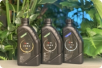

친환경 제품 및 서비스 SV 성과 6,000억원 이상 창출
'친환경 제품 및 서비스 확대'의 중장기 목표는 SK이노베이션이 보유한 제품 및 서비스의 SV 성과를 매년 20% 이상 증가시켜, 2025년에는 2021년 실적의 2배 이상인 6,000억원 이상의 친환경 제품 및 서비스 SV를 창출하는 것입니다.
SK이노베이션 계열 대표 친환경 제품 및 서비스
친환경 아스팔트
SK에너지는 고침입도 재활용 아스팔트를 개발, 판매하여 폐아스콘(순환골재) 내 노화된 아스팔트 재활용을 촉진시켜 폐기물 저감에 기여합니다. 나아가 일반 아스팔트 대비 내구성이 높고 약 30도 낮은 온도에서 시공이 가능한 프리미엄 아스팔트는 온실가스 및 대기오염물질 저감 성과를 창출합니다.

친환경 윤활기유
SK루브리컨츠가 개발한 친환경 윤활기유는 엔진 보호성능과 연비 향상 효과가 탁월하여, 배기가스 배출을 저감시키고 환경 개선에 기여합니다.

공정 폐열로 지역난방 공급
SK인천석유화학은 버려지던 공정 폐열을 회수해 인근 지역사회 최대 4만 세대가 1년 간 사용 가능한 냉·난방용 에너지를 제공합니다. 집단에너지 회사와 협업하여 추진 중인 에너지 업사이클링 사업은 추가 화석연료 사용 회피에 기여해 온실가스 저감 성과를 창출합니다.